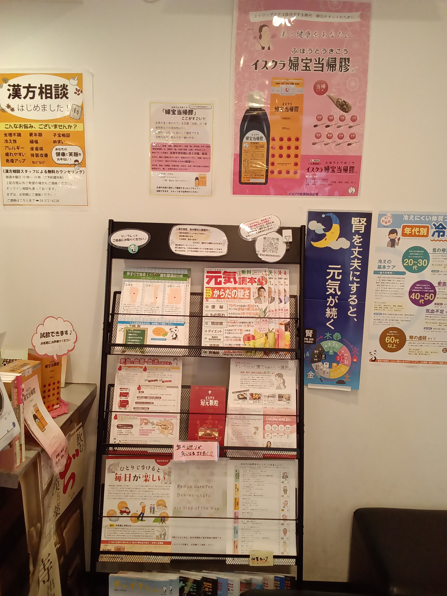
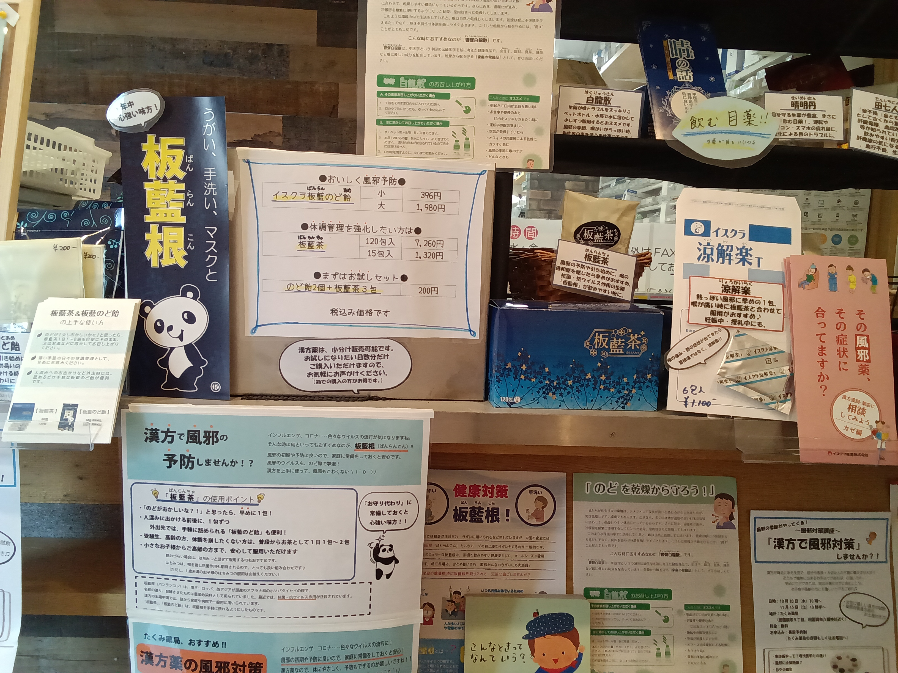

イスクラ産業株式会社の公式サイト、公式YouTubeチャンネルでも、漢方や養生に関する情報を発信しています。
LINE UP
お悩みに合わせた漢方製剤を、引き出しごとにご紹介します。掲載内容は随時更新しております。
女性の宝と言われる生薬「当帰」を7割配合したシロップ剤。生理・更年期にともなう不調に、自然な甘さで続けやすいのが特長です。
巡りが滞りがちな「瘀血（おけつ）」タイプに。血のめぐりをサポートする顆粒タイプの漢方製剤です。
のどの乾燥や風邪の季節に。うがい・手洗い・マスクと合わせて、年中頼れる味方です。外出先でも手軽に舐められます。
「板藍根（ばんらんこん）」を使ったお茶タイプ。人混みに出かける前後や、のどに不安を感じたときの一包に。
熱っぽい風邪のひき始めの1包に。喉が痛いときは板藍茶と合わせての服用もおすすめです。妊娠中・授乳中の方にも使用いただけます。
生薬でつくる「飲む目薬」。パソコンやスマホでの目の疲れ、血行不良が気になる方に。
お湯や水に溶かしてうがいに使う散剤。生薬が喉のイガイガ、声の悩みをスッキリさせてくれます。携帯用の水筒にもおすすめです。
板藍のど飴2個と板藍茶3包がセットになった、はじめての方向けのお試しセットです。
上記は取扱商品の一部です。在庫状況や、その他の漢方製剤については店頭またはお電話（03-3721-6228）にてお気軽にお問い合わせください。

